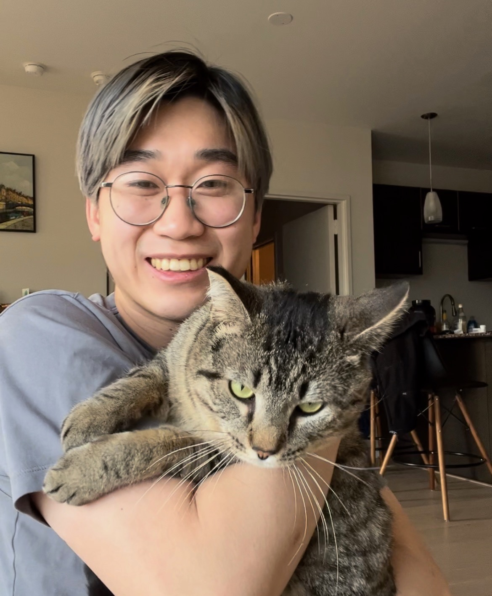

<div class='row slide'>
    <div class="col-md-6 offset-md-3">
        <div class="row">
            <div class="col-lg-4"></div>
            <div class="col-lg-8">
                <h4 class='about'>Hi, my name is Ryan Lu, and I am currently a second-year MD/PhD student at <span class="highlight">Northwestern University.</span> I will be starting my PhD in the <a href="https://sites.northwestern.edu/kennedylab/">Kennedy Lab</a> in Fall of 2023. I received my BS in Biomedical Engineering with Departmental Honors in 2020 from <span class="highlight">Johns Hopkins University</span>.</h4>
                <h4 class = 'about'> My research interests lie in theoretical neuroscience and data science. My prior research experiences include research performed with <a href='https://nevro.com/English/Home/default.aspx'>Nevro</a>, the <a href='https://pages.jh.edu/kechen/'>Zhang Lab</a>, and the <a href='https://lcicm.jhmi.edu/'>Stevens Lab.</a></h4>
            </div>
        </div>
    </div>
</div>